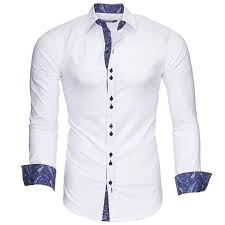
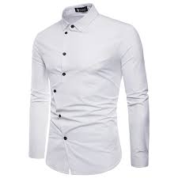
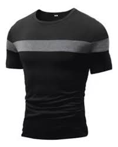
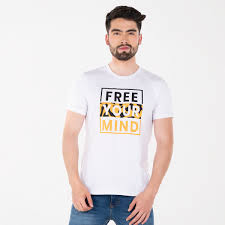
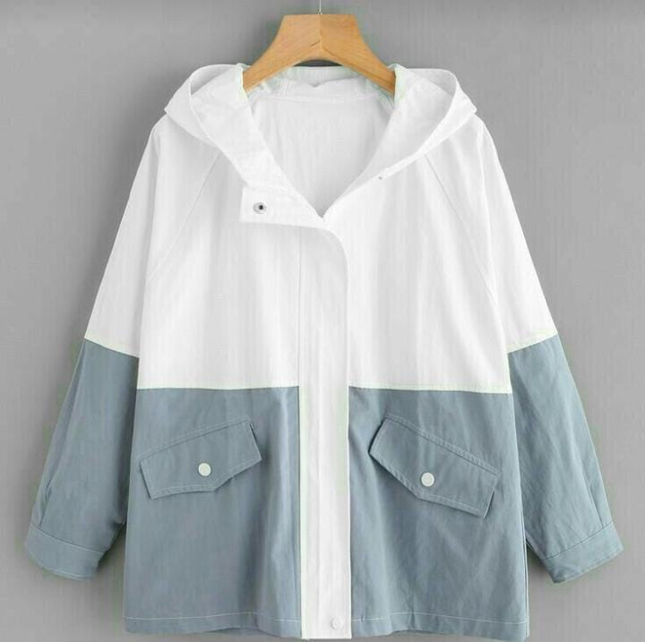
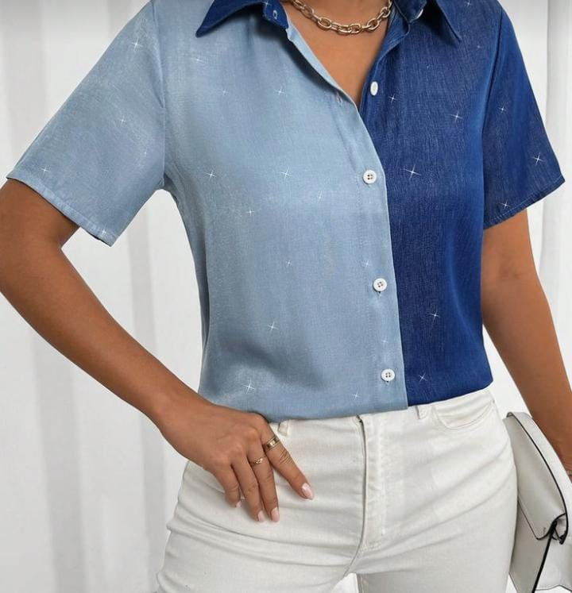
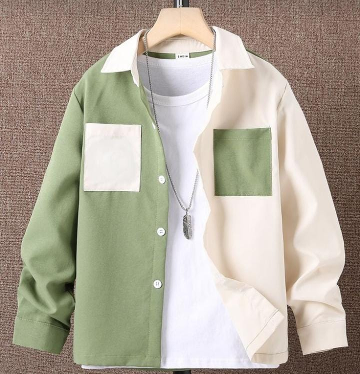
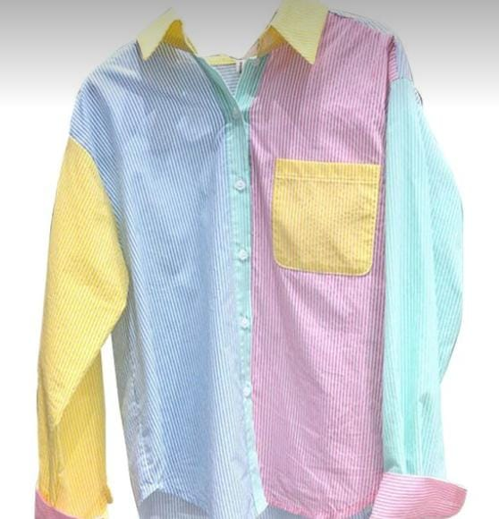

Bienvenido a Nova Emprende
En Nova Emprende, nos enorgullece ser una micro empresa comprometida con la sostenibilidad y la moda responsable. Desde nuestra fundación, hemos estado dedicados a ofrecer alternativas ecológicas en el mundo de la moda, enfocándonos especialmente en camisas reutilizadas. Nuestro objetivo es proporcionar a nuestros clientes una opción única y respetuosa con el medio ambiente para enriquecer su guardarropa.
Historia de la Empresa
Fundada con el propósito de transformar la moda convencional, Nova Emprende nació de la necesidad de combinar estilo con responsabilidad ambiental. Nuestra historia comenzó con una simple idea: reutilizar prendas para reducir el impacto ambiental de la moda. Desde entonces, hemos crecido, pero nuestra misión sigue siendo la misma: ofrecer ropa de calidad que respalde un futuro más sostenible.
Valores y Compromiso
Nuestros valores fundamentales incluyen ética, responsabilidad social y un firme compromiso con la sostenibilidad. Trabajamos con transparencia en todas nuestras operaciones, desde la selección de las camisas hasta el servicio al cliente, asegurándonos de que cada aspecto de nuestro negocio respalde nuestra misión de moda responsable.
HOMBRE
Camisa de lino reciclado
Esta camisa está hecha de lino reciclado, ligera y transpirable, perfecta para los días cálidos. Su diseño clásico de botones y cuello formal combina comodidad y elegancia con un enfoque sostenible.
Tallas disponibles: S, M, L, XL
Colores disponibles: Blanco, Beige, Azul Marino
Precio: $45.99

Camisa de algodón orgánico slim fit
Diseñada con algodón orgánico y un ajuste ceñido, esta camisa ofrece un estilo moderno y ecológico. Ideal para un look sofisticado y responsable.
Tallas disponibles: S, M, L, XL
Colores disponibles: Negro, Gris, Azul Claro
Precio: $49.99

Camiseta básica de algodón reciclado
Esta camiseta está fabricada con algodón reciclado, suave al tacto y con un ajuste relajado. Incluye el logo de la empresa en la parte frontal, destacando su compromiso con el medio ambiente.
Tallas disponibles: S, M, L, XL
Colores disponibles: Blanco, Negro, Gris
Precio: $19.99

Camiseta estampada estilo urbano (material reciclado)
Camiseta hecha con materiales reciclados, con un diseño gráfico moderno inspirado en el estilo urbano y el logo de la empresa al centro. Expresa tu estilo y compromiso con el planeta.
Tallas disponibles: S, M, L, XL
Colores disponibles: Negro, Blanco, Rojo
Precio: $24.99

MUJER
Abrigo acolchado ligero
Un abrigo acolchado fabricado con materiales reciclados, ligero pero cálido. Su diseño funcional lo convierte en una prenda esencial para los días fríos sin comprometer el estilo ni el planeta.
Tallas disponibles: XS, S, M, L
Colores disponibles: Azul Oscuro, Beige, Negro
Precio: $89.99

Blusa de seda
Esta delicada blusa está confeccionada con seda reciclada, manteniendo suavidad y fluidez. Su diseño con volantes añade un toque femenino y elegante, con un enfoque responsable.
Tallas disponibles: XS, S, M, L
Colores disponibles: Rosa Palo, Blanco, Azul Marino
Precio: $55.99

Abrigo de lana clásica
Este abrigo de lana reciclada combina estilo y sostenibilidad. Con su corte clásico y su material cálido, es ideal para mantener el estilo en los días fríos mientras cuidas del planeta.
Tallas disponibles: XS, S, M, L
Colores disponibles: Gris, Lila, Negro
Precio: $120

Blusa con mangas algodón
Blusa de algodón reciclado con mangas abullonadas para un estilo elegante y contemporáneo. Perfecta para un look responsable y sofisticado.
Tallas disponibles: XS, S, M, L
Colores disponibles: Negro, Blanco, Verde Esmeralda
Precio: $49.99

Servicios
Promoción de la Moda Sostenible
En Nova Emprende, nuestra visión es promover la moda sostenible a través de la reutilización de prendas, con el fin de reducir el desperdicio textil y fomentar un consumo más consciente. Estamos comprometidos a ofrecer a nuestros clientes no solo productos de alta calidad, sino también una experiencia de compra que refleje nuestros valores fundamentales de sostenibilidad y responsabilidad.
1. Venta de Camisas Reutilizadas Ofrecemos una exclusiva colección de camisas reutilizadas, cuidadosamente seleccionadas para garantizar su calidad y estilo. Cada camisa en nuestro inventario ha sido inspeccionada y renovada para ofrecer una opción de moda ecológica y elegante que se adapta a diversas ocasiones y preferencias personales.
2. Consultoría en Moda Sostenible Nuestro equipo de expertos en moda sostenible está disponible para proporcionar asesoramiento personalizado. Ayudamos a nuestros clientes a elegir las prendas que mejor se adapten a su estilo y necesidades, mientras les educamos sobre las ventajas de optar por moda reutilizada y cómo puede impactar positivamente en el medio ambiente.
3. Renovación y Mantenimiento de Prendas Brindamos servicios de renovación y mantenimiento para nuestras camisas reutilizadas. Aseguramos que cada prenda mantenga su apariencia y funcionalidad a lo largo del tiempo, ofreciéndole una durabilidad superior y un valor a largo plazo.
4. Envío Ecológico y Políticas de Devolución Implementamos opciones de envío ecológico, utilizando embalajes reciclables y prácticas que minimizan nuestra huella de carbono. Además, ofrecemos políticas de devolución flexibles para garantizar que nuestros clientes estén completamente satisfechos con sus compras y puedan hacer ajustes si es necesario.
5. Educación y Eventos sobre Moda Sostenible Organizamos eventos y talleres educativos sobre moda sostenible y reutilización de prendas. Estos eventos están diseñados para inspirar a nuestros clientes y a la comunidad a adoptar prácticas de moda responsables y a explorar la riqueza de la moda reutilizada.
6. Acceso a Colecciones Exclusivas Ofrecemos acceso a colecciones exclusivas y ediciones limitadas de camisas reutilizadas, que reflejan las últimas tendencias y diseños innovadores en el mundo de la moda sostenible. Estas colecciones están disponibles solo para nuestros clientes más leales y entusiastas de la moda consciente.